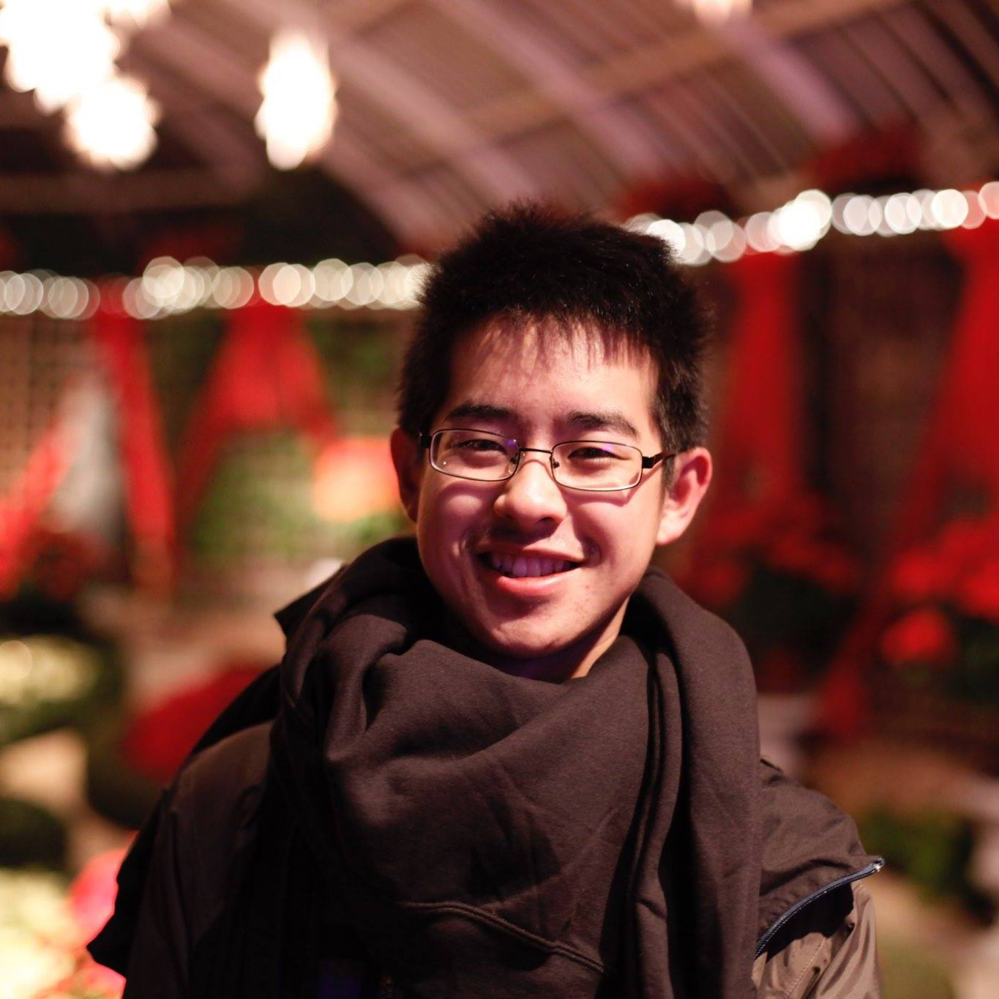

Hi! I'm Albert, a sophomore at Carnegie Mellon University currently studying communications and environments design. As a designer, I'm interested in helping bridge the gap between different cultures around the globe through the use of visual communication and interactions. In my free time, I like to play video games, watch movies, and explore cities looking for new foods to try out (I especially love PMT/boba/bubble tea)!
I'm currently searching for design internships for summer 2016.
Feel free to contact me at albertya@andrew.cmu.edu!